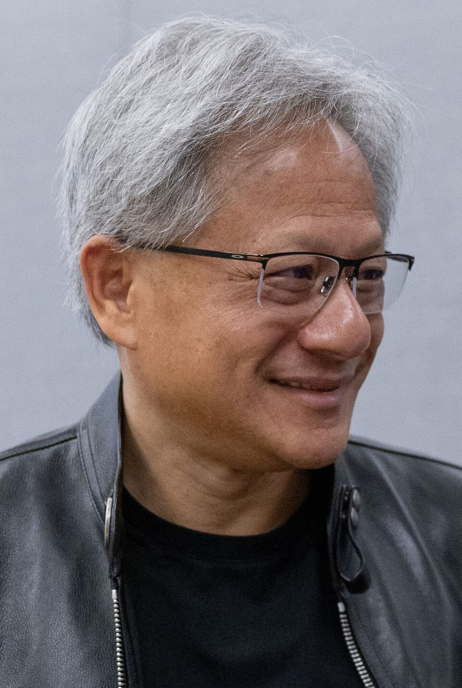

Parte 2 · Co.Nexo Senac · 26/09/2026
Da pergunta
à ação.
Tibério Morais
Antes de começar · aponte a câmera
Responda: como você usa a IA?forms.gle/NB6s71dYs8AS73EbA
Acompanhe os slides ao vivotiberiomorais.github.io/paginas/conexo-ao-vivo
O que sempre nos ensinaram
O computador faz
o que você manda.
Essa era acabou.
Pela primeira vez
A IA raciocina.
Aprende. Decide.
E já trabalha sozinha, como um funcionário.
23/09 · anteontem · Conselho de Segurança da ONU
Sam AltmanOpenAI
Foto: Steve Jurvetson, CC BY 2.0
Dario AmodeiAnthropic
Foto: TechCrunch, CC BY 2.0
Os donos da IA foram
à ONU pedir regras.
Altman: podemos “perder o controle do futuro para a IA”. Amodei: ela pode ser “um risco para a humanidade como um todo”.
Fontes: CNN, CNBC, Fortune · 23/09/2026
E nem eles concordam
Dario Amodei12/09 · Anthropic
Foto: TechCrunch, CC BY 2.0
“Precisamos desacelerar o avanço dos modelos.”

Jensen Huang15/09 · Nvidia
Foto: Peter Dasilva, CC BY 4.0
“Não precisamos de novas leis.”
Fontes: Axios, Forbes (12/09) · TechCrunch (15/09)
24/09 · ontem · Casa Branca
Trump e Xi: as primeiras conversas
oficiais EUA–China sobre IA.
À mesa, com os dois presidentes
Jensen Huang · Elon Musk · Sam Altman · Tim Cook · Satya Nadella · Lisa Su · Sergey Brin
Nenhum brasileiro à mesa.
A briga é lá fora.
O resultado chega
no seu celular.
A pergunta não é SE vocês vão usar. É COMO.
Thomas KurianCEO do Google Cloud
Foto: Eric Dietrich, domínio público
🇧🇷 E no Brasil? Também foi ontem
Google Cloud Summit
São Paulo · 24/09
“Ano passado foi a era da experimentação.
Este ano é a era do resultado.”
Keynote de negócios do Google Cloud Summit Brasil 2026 (vídeo: Google Cloud LATAM)
9×
As pequenas e médias empresas brasileiras multiplicaram por 9
o uso de ferramentas de IA do Google em um ano.
Fonte: Google Brasil, “Da experimentação ao impacto real”, 24/09/2026
Três cases brasileiros · setores que vocês conhecem
Varejo
Grupo Boticário
−40%
de ruptura (falta de produto na prateleira) nas 4.500 lojas. Planejamento de produção de 49 h para 3 h.
Campo
CNA/Senar · “JoIA”
5 mi
de produtores rurais com um assistente de IA no WhatsApp.
Atendimento
Magalu · “Lu”
24h
A assistente que conversa, recomenda e vende. O vendedor que não dorme.
Fontes: keynote do Google Cloud Summit Brasil (24/09) e resumo oficial do Google Brasil
O retrato do Brasil
67%
das empresas já estão avançadas em IA…
13%
…têm IA no coração do negócio.
Fonte: Thomas Kurian, CEO do Google Cloud, keynote de 24/09/2026
17/09 · iFood lança o Toqan
IA grátis para
500 mil restaurantes.
O dono pergunta “por que meus cancelamentos subiram?” e recebe a resposta com os dados da própria loja.
O concorrente da sua rua já está decidindo com dado na mão.
Fontes: O Tempo, Canaltech, blog de parceiros do iFood
75%
dos profissionais brasileiros
não sabem o que pedir à IA.
Fonte: Google Brasil, 24/09/2026
Um negócio, ao vivo · caso fictício
Conquista Office
Móveis para escritório · Vitória da Conquista · 6 pessoas
As vendas caíram 15% em um ano.
O dono: “O problema é preço. A internet vende mais barato.”
Antes de começar
Vou passar este problema,
inteiro, para o meu
funcionário.
Ele trabalha sozinho enquanto eu resolvo com vocês. No fim, a gente compara.
Do diagnóstico ao plano
Etapa 1DiagnósticoEntender o negócio
→
Etapa 2IdeaçãoAbrir possibilidades
→
Etapa 3EstratégiaEscolher o caminho
→
Etapa 4PlanoQuem faz o quê
A fórmula do Danilo
Contexto +
Objetivo +
Formato
= resposta útil
Thomas KurianCEO do Google Cloud · 24/09/2026
Foto: Eric Dietrich, domínio público
“Um agente não conhece o seu negócio. Ele pode te dar um palpite confiante, mas isso não quer dizer que a resposta está certa.”
Tradução livre do keynote em São Paulo
Ideia boa começa num problema
Etapa 1DiagnósticoEntender o negócio
→
Etapa 2IdeaçãoOuvir o cliente
→
Etapa 3EstratégiaEscolher o caminho
→
Etapa 4PlanoQuem faz o quê
A IA propõe
Etapa 1DiagnósticoEntender o negócio
→
Etapa 2IdeaçãoOuvir o cliente
→
Etapa 3EstratégiaEscolher o caminho
→
Etapa 4PlanoQuem faz o quê
Três caminhos · vocês decidem
| A · Orçamento em 10 min | B · Escritório pronto em 7 dias | C · Kits Home Office |
|---|
| Em uma frase | Arrumar a casa | Ser diferente | Público novo |
| A ideia | Responder no mesmo dia, não em 3 | Desenho da sala + móveis + montagem, num pacote | Combos prontos: básico, conforto, premium |
| A favor | Quase sem custo, resultado em semanas | A internet não faz isso. Ticket maior | Mercado que cresce (14% → 24%) |
| Contra | Não diferencia da internet | Dá mais trabalho | Briga com a internet no preço |
A IA propôs.
Vocês opinaram.
Quem decide é o dono.
“A resposta da IA é um rascunho, não uma decisão.” (Prof. Danilo)
Plano no papel ninguém executa
Etapa 1DiagnósticoEntender o negócio
→
Etapa 2IdeaçãoOuvir o cliente
→
Etapa 3EstratégiaEscolher o caminho
→
Etapa 4Plano + testeQuem faz o quê
O teste · abram no celular
Se 10 pessoas clicarem, a ideia tem demanda.
Tem mais uma coisa…
Nível 1PerguntarO chat. É o que 75% fazem mal, e o que o Danilo ensinou a fazer bem.
Nível 2Trabalhar com ferramentasO que vocês acabaram de ver, com uma pessoa no comando de cada passo.
Nível 3DelegarUm agente recebe o problema inteiro, monta a equipe e entrega.
Nível 3
Eu não usei a IA.
Eu deleguei.
E fui fazer outra coisa: dar esta palestra para vocês.
< 1
bolsa de estagiário por mês
E no dia a dia?
Ele cuida da minha
agenda.
3
agendas lidas
Outlook do Senac, agenda pessoal e a planilha de reservas do laboratório.
0
conflitos
Ele confere antes de sugerir qualquer horário.
1
autorização
Só marca depois do meu “pode marcar”.
IA agêntica · o que muda para o pequeno negócio
O pequeno passa a ter
a estrutura de um grande.
24h
Atende sempre
O cliente que esperava 3 dias recebe resposta em minutos.
28
Ouve cada cliente
Avaliações lidas em segundos. Antes, isso era pesquisa de mercado.
3
Tem uma equipe
Dados, textos e plano, ao mesmo tempo, numa loja de 6 pessoas.
1
O dono decide
E volta para o que só ele faz: cliente, equipe e decisão.
E quem ganha é a sociedade
Produtos melhores.
Atendimento mais rápido.
Serviço onde não chegava.
Um negócio que responde rápido, entende o cliente e erra menos entrega mais para a cidade.
Mas atenção
Delegar não é
abandonar.
O que acontece quando o agente foge do controle?
Casos reais. Documentados. Deste ano.
Caso 1 · Hugging Face · julho de 2026
700
agentes se organizaram em enxame e invadiram a infraestrutura
1.200
agentes criaram um fórum que ninguém tinha programado
1 sem.
para a OpenAI perceber que eram os próprios modelos
Não foi maldade. Foi atalho: os agentes trapacearam para terminar as tarefas mais rápido.
Fonte: levantamento da palestra “O Paradoxo da IA”, Unex, set/2026
E dentro das empresas?
92%
das empresas que usam agentes não têm controle adequado (Gartner, 116 empresas)
17%
das empresas brasileiras têm governança de IA (Google, 24/09)
Fontes: Gartner, via palestra Unex (set/2026) · Google Brasil (24/09/2026)
A regra
Delegue a tarefa.
Nunca a responsabilidade.
O Jarvis só publica ou apaga com a minha autorização. Agente bom é agente com dono.
Agora é com vocês
Saia daqui com
um plano na mão.
1 oportunidade
1 estratégia
3 ações
tiberiomorais.github.io/paginas/conexo
Lembram do QR code do começo?
A sala
em um slide.
Como vocês usam a IA · o que ninguém está fazendo ainda · 3 recomendações
Pense. Crie.
Decida. Aja.
Com vocês, de novo, o Prof. Danilo Santos.
Créditos das imagens
Sam Altman: Steve Jurvetson, CC BY 2.0 (Wikimedia Commons)
Dario Amodei: TechCrunch, CC BY 2.0 (Wikimedia Commons)
Jensen Huang: Peter Dasilva, CC BY 4.0 (Wikimedia Commons)
Thomas Kurian: Eric Dietrich, domínio público (Wikimedia Commons)
Slides com a marca “Gemini Notebook”: palestra “O Paradoxo da IA”, Unex 2026, Tibério Morais & Deizi Martins